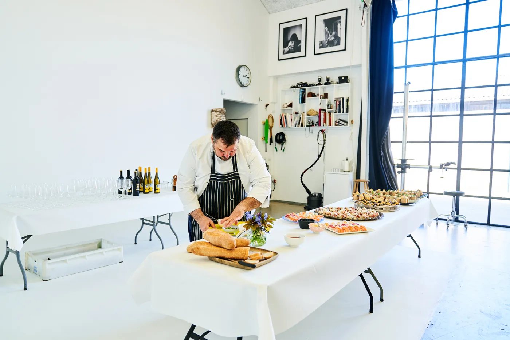

Jernbanecaféen · Lille Torv 3, Ikast
Dansk kro-mad
på stationen.
Klassiske danske retter, hjemmelavet thai og dagens ret i den gamle stationsbygning.
Du behøver ikke bestille bord.
Kom bare forbi.
Vil du leje Niels? Gå til Lej en Kok

Dansk kro-mad.
Thai.
Takeaway.
Vælg køkken
Dansk kro-mad.
Thai også.
Du kan spise her uden reservation. Vil du hellere tage maden med, kan alt på menukortet bestilles som takeaway.
Fra køkkenet i dag
Dagens
ret.
Dagens ret er ikke lagt op endnu. Ring på 30 80 72 41, så fortæller vi gerne, hvad der står på.


Manden bag kro-maden
Niels er vokset op på en kro.
Det er en del af forklaringen på, hvorfor han holder fast i den danske kro-mad. Den slags retter er svære at finde i Danmark, og de skal laves med tid, håndelag og respekt for dem, der skal spise dem.
Rapheephon laver samtidig hjemmelavet thai. To køkkener, samme café og plads til at komme, som man er.
Læs om caféen
Siden 2023
Kom bare forbi.
Du behøver ikke bestille bord for at spise på Jernbanecaféen. Lille Torv 3 ligger midt i Ikast, og der er plads til både en hurtig frokost, dagens ret og en aften med god tid.
Find osTakeaway · catering · selskaber
Thai med hjem. Mad til flere.
Alt på menukortet kan bestilles som takeaway. Ring på 30 80 72 41, hvis du vil bestille thai eller noget fra det danske køkken. Til private dining med Niels går turen videre til Lej en Kok.
Se thai takeaway Lej Niels gennem Lej en Kok
Kom forbi
Ingen reservation nødvendig.
Du er velkommen til bare at komme. Vil du være sikker på plads til et større selskab, kan du skrive til os.
Lille Torv 37430 Ikast
30 80 72 41
info@jbcafeen.dk